Karta ma rozstrzygnąć: ile łącznie po dotacji, czy pasuje do falownika, kiedy montaż i co dokładnie dostaję. Panel kupna i zakładki zostają, zmienia się kolejność liczb i dochodzi zgodność.
Cena, montaż i dotacja w projektach to liczby przykładowe sklepu testowego; złote pola [X] czekają na dane i decyzje. Sekcje bez zmian zostają 1:1 — sekcje nie są usuwane. Opinii klientów i rankingów sprzedaży nie ma: projekt pokazuje miejsce i mechanizm, nie wymyślone liczby. Liczby „n z 8” to rynek PL (8 sklepów), „n z 11” to PL i UE razem (Quatt, Flairmax, Hello Watt).
10elementów w projekcie
3ulepszamy (istniejące)
7nowe
2opcjonalne (słaby dowód)
6czekają na dane (dostawca, firma, opinie)
Klucz zmian＋ Noweelement lub funkcja, których dziś nie ma✎ Zmianaistniejący element zmienia wygląd, układ lub działanieAa Tekstzmienia się tylko napis lub treść⇄ Przeniesienieelement trafia w inne miejsce− Usunięcieelement znika ze strony[X]złote pole — dane lub decyzja do uzupełnienia
Numer w kółku na projekcie ma kolor kodu i odpowiada pozycji na liście „Znaczniki na projekcie”.
Nad przyciskiem stoi jedna główna liczba: „Twój koszt po dotacji, z montażem” 22 900 zł. Pod nią w jednej linii składniki (sprzęt, montaż, EMS, dotacja) z linkiem „Zobacz paragon”; cena sprzętu z VAT i zł za kWh jest liczbą drugorzędną. Przy każdej obniżce dochodzi „najniższa cena z 30 dni”. Przyciski „Do koszyka z montażem” i „Dodaj sam sprzęt” zostają 1:1.
Najlepsze na rynku
Solvolte: pod ceną komplet — „VAT wliczony”, „Rata już od 283,82 zł”, „Najniższa cena … od 26.10.2026”, „Dostawa 2–3 dni robocze”, „DARMOWA DOSTAWA!”.
Quatt: „Hybrid vanaf €4.449 of €35/mnd” i trzy punkty korzyści; ceny w sekcji modeli „inclusief basisinstallatie en na aftrek ISDE”.
Hello Watt: trzy zestawy z mocą, marką i ceną całkowitą po odliczeniu dotacji (11 105 €, 12 550 €, 14 925 €).
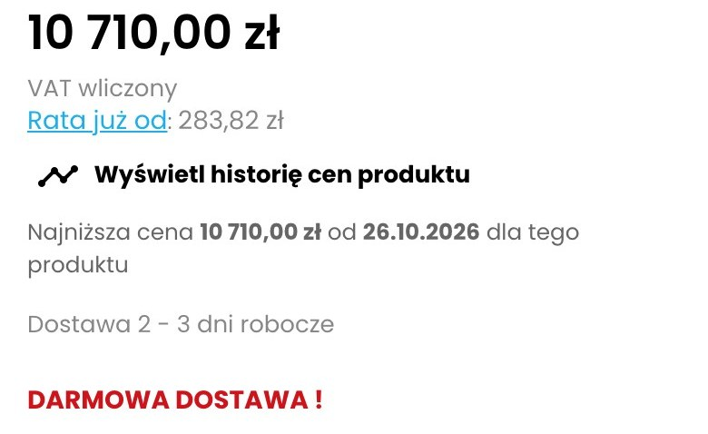
SolvolteCena 10 710,00 zł, „VAT wliczony”, „Rata już od: 283,82 zł”, link do historii cen, „Najniższa cena 10 710,00 zł od 26.10.2026”, „Dostawa 2–3 dni robocze”, „DARMOWA DOSTAWA!”.
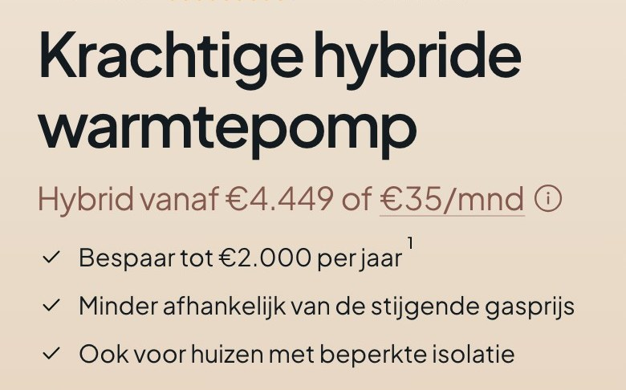
Quatt (NL)Nazwa, „Hybrid vanaf €4.449 of €35/mnd” z ikoną informacji i trzy punkty korzyści z ptaszkami.
Quatt (NL)Karty Hybrid Single i Hybrid Duo (z plakietką „Meest gekozen”): moc, cena i miesięczna rata.
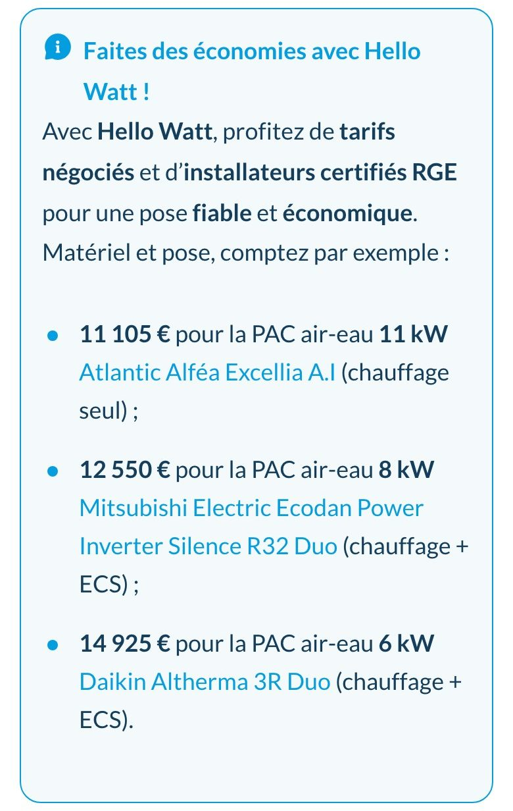
Hello Watt (FR)Ramka „Faites des économies avec Hello Watt!”: trzy zestawy z mocą, modelem i ceną „sprzęt + montaż po odliczeniu dotacji” (11 105 €, 12 550 €, 14 925 €).
Dziś
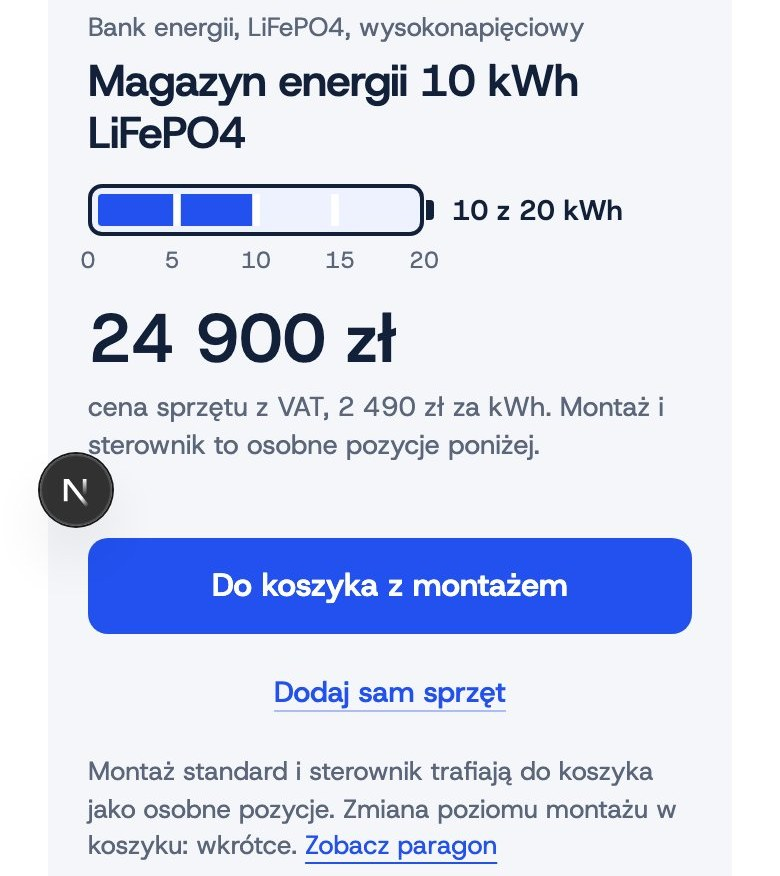
Dziś: cena sprzętu 24 900 zł (34 px), „Montaż i sterownik to osobne pozycje poniżej”, przyciski „Do koszyka z montażem” i „Dodaj sam sprzęt”, „Zobacz paragon” w trzecim wierszu.
✎ ZmianaGłówna liczba: koszt po dotacji z montażem (34 px, zielony); cena sprzętu staje się drugą liczbą.
＋ NoweSkładniki w jednej linii: sprzęt, montaż, EMS, dotacja; link „Zobacz paragon” do tabeli niżej.
＋ Nowe„Najniższa cena z 30 dni” przy każdej obniżce (obowiązek przy promocji).
Znaczniki na projekcie
1PDP-01.1✎ ZmianaKoszt po dotacji z montażem jako główna liczba
2PDP-01.2＋ NoweRozbicie w jednej linii
3PDP-01.3＋ NoweNajniższa cena z 30 dni
DlaczegoKoszt po dotacji z montażem jako pierwsza liczba nad przyciskiem; składniki w jednej linii.kliknij, aby rozwinąć
KupującyKupujący pyta „ile zapłacę łącznie po dotacji”, a nie „ile kosztuje sprzęt”; limit dotacji liczy się od kosztu z montażem (≤ 3 000 zł za kWh).Czytaj więcejDziś liczba końcowa jest trzecia w kolejności czytania: najpierw cena sprzętu 24 900 zł (34 px), potem paragon (741 px), a „Twój koszt 22 900 zł” dopiero na dole paragonu.
RynekQuatt: cena „od” z ratą w jednej linii i dopiskiem „po odliczeniu dotacji”; Solvolte: komplet przy cenie — VAT wliczony, rata od 283,82 zł, „najniższa cena z 30 dni”, dostawa 2–3 dni, darmowa dostawa; Hello Watt: „11 105 € za pompę 11 kW” jako cena zestawu po odliczeniu dotacji.Czytaj więcejInformację o VAT przy cenie ma 5 z 8 sklepów PL.
UXPanel kupna jest dziś porządny, ale cena końcowa jest schowana; zmiana nie dodaje kolejnej liczby, tylko zmienia kolejność.Czytaj więcejZ F2 nie bierzemy nic: F2 nie projektowało karty.
Testy A/B — 5 propozycji · 1 z grafiką kliknij, aby rozwinąćTest 1 · A/BGłówna liczba: po dotacji kontra sprzętz grafiką
Hipoteza: Jeśli główną liczbą będzie koszt po dotacji z montażem, to więcej osób doda produkt do koszyka, bo cena końcowa jest pierwsza.
Wariant AKoszt po dotacji z montażem jako główna.
Wariant BCena sprzętu jako główna (jak dziś), koszt po dotacji w linii pod nią.
Dowód: Quatt i Hello Watt podają cenę z dotacją; Solvolte komplet przy cenie.
Metryka główna: Dodanie do koszyka
Pomocnicze:
Przewinięcie do paragonu
Zwroty z koszyka
Warunek: Po starcie sprzedaży, min. 200 sesji na wariant; do tego czasu przegląd nagrań sesji (Clarity) i porównanie przed/po.
Próba: min. 200 sesji na wariant
Zastępczo: przed/po 14 dni + 20 nagrań sesji z elementem w widoku
Odwracalny
Wariant B — jak wygląda
Magazyn energii 10 kWh LiFePO4
10 z 20 kWh05101520
24 900 złsprzęt z VAT · z montażem 30 900 zł · po dotacji 22 900 zł
Test 2 · A/BRozbicie w linii kontra rozwijany paragon
Hipoteza: Jeśli rozbicie będzie rozwijane („Pokaż, z czego to się składa”), to więcej osób zostanie, bo karta jest krótsza.
Wariant ALinia ze składnikami.
Wariant BRozwijany paragon.
Metryka główna: Dodanie do koszyka
Warunek: Po starcie sprzedaży, min. 200 sesji na wariant; do tego czasu przegląd nagrań sesji (Clarity) i porównanie przed/po.
Próba: min. 200 sesji na wariant
Zastępczo: przed/po 14 dni + 20 nagrań sesji z elementem w widoku
Odwracalny
Test 3 · A/BCena brutto i netto
Hipoteza: Jeśli pokażemy cenę z VAT 8% i 23% (jak KupPanPompe) po ustaleniu stawki dla montażu, to więcej osób zaufa cenie, bo widzi obie.
Wariant AJedna cena.
Wariant BDwie stawki VAT.
Dowód: KupPanPompe: dwie stawki VAT na kaflu.
Metryka główna: Dodanie do koszyka
Warunek: Po potwierdzeniu stawki VAT dla montażu (księgowa).
Próba: min. 200 sesji na wariant
Zastępczo: przed/po 14 dni + 20 nagrań sesji z elementem w widoku
Odwracalny
Test 4 · A/BPlakietka „Najczęstsza pojemność w domach” przy tytule
Hipoteza: Jeśli przy tytule 10 kWh pojawi się plakietka rynkowa, to więcej osób zostanie na karcie, bo to najczęstsza klasa.
Wariant ABez plakietki.
Wariant BZ plakietką.
Dowód: Quatt: „Meest gekozen”.
Metryka główna: Dodanie do koszyka
Warunek: Po starcie sprzedaży, min. 200 sesji na wariant; do tego czasu przegląd nagrań sesji (Clarity) i porównanie przed/po.
Próba: min. 200 sesji na wariant
Zastępczo: przed/po 14 dni + 20 nagrań sesji z elementem w widoku
Odwracalny
Test 5 · A/BPrzycisk: „Do koszyka z montażem” kontra „Dodaj do koszyka”
Hipoteza: Jeśli przycisk będzie „Dodaj do koszyka”, to mniej osób zawaha się, bo nazwa jest znana, ale część dostanie sam sprzęt.
Wariant A„Do koszyka z montażem”.
Wariant B„Dodaj do koszyka” z wyborem montażu w koszyku.
Dowód: Montaż w koszyku (zmiana poziomu: wkrótce).
Metryka główna: Zamówienie z montażem
Pomocnicze:
Zwroty z koszyka
Warunek: Po starcie sprzedaży, min. 200 sesji na wariant; do tego czasu przegląd nagrań sesji (Clarity) i porównanie przed/po.
Próba: min. 200 sesji na wariant
Zastępczo: przed/po 14 dni + 20 nagrań sesji z elementem w widoku
Odwracalny
Decyzja Cena „najniższa z 30 dni” obowiązuje przy każdej obniżce; dane o historii cen dostarcza sklep.
PDP-02
Dostępność, termin montażu i dostawa
DODAJEMYCZEKA NA DANE
Trzy linie pod ceną: „Dostępny · montaż od [data]”, „Dostawa sprzętu w cenie montażu” i „Odpowiedź doradcy: do [X] godzin”. Dane (data, dostępność) przyjdą po wyborze dostawcy; do tego czasu pola są puste. Zielona kropka znaczy „dostępny”.
Najlepsze na rynku
Flairmax: „Lieferzeit ca. 5–10 Werktage” z zieloną kropką między etykietami a polem zakupu.
KupPanPompe: „Produkt dostępny na zamówienie” jako osobny wiersz w panelu.
Bridom: wiersz z ikoną zegara „Wysyłka: do 7 dni”.
Solvolte: „Dostawa 2–3 dni robocze” i „Darmowa dostawa”.
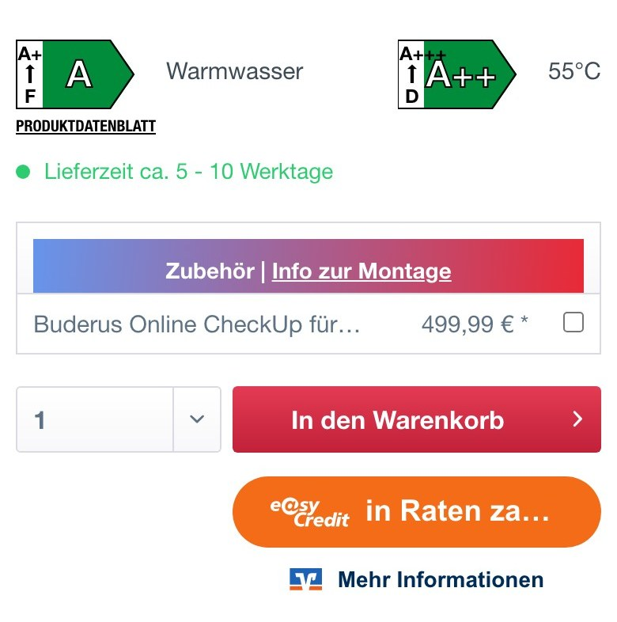
Flairmax (DE)Etykiety energetyczne, „Lieferzeit ca. 5–10 Werktage” z zieloną kropką, pole „Zubehör”, ilość, czerwony przycisk koszyka i przycisk raty easyCredit.
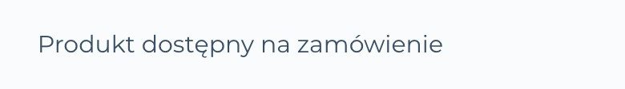
KupPanPompeWiersz „Produkt dostępny na zamówienie” pod ceną.
＋ Nowe„Dostępny · montaż od [data]” z zieloną kropką.
＋ Nowe„Dostawa sprzętu w cenie montażu”.
＋ Nowe„Odpowiedź doradcy: do [X] godzin” (czas odpowiedzi).
Znaczniki na projekcie
1PDP-02.1＋ NoweDostępność i termin montażu
2PDP-02.2＋ NoweDostawa
3PDP-02.3＋ NoweCzas odpowiedzi doradcy
DlaczegoTermin montażu, dostawa w cenie i czas odpowiedzi doradcy w trzech krótkich liniach.kliknij, aby rozwinąć
KupującyPrzy pompie i banku termin montażu jest produktem: kupujący z awarią kotła („stary kocioł padł zimą — co teraz”) pyta „ile to potrwa”.Czytaj więcejDziś nie ma żadnej informacji o terminie ani dostawie.
RynekStan magazynu ma 4 z 8 sklepów PL (KupPanPompe „Produkt dostępny na zamówienie”, Soltech, Sofar, Solvolte), opcje dostawy 3 z 8, Bridom i Flairmax datę lub „Lieferzeit ca.Czytaj więcej5–10 Werktage” z zieloną kropką. Termin jest tu ważniejszy niż w zwykłym sklepie, bo kupuje się montaż.
UXDziś w panelu zakupu brak informacji o dostępności i terminie; trzy krótkie linie nie wydłużają panelu bardziej niż o 80 px.Czytaj więcejTermin pochodzi z kalendarza montażu.
Testy A/B — 5 propozycji · 1 z grafiką kliknij, aby rozwinąćTest 1 · A/BTermin jako informacja kontra pole „Zmień”z grafiką
Hipoteza: Jeśli termin będzie polem z możliwością zmiany, to więcej osób doda do koszyka, bo wybiera swój termin.
Wariant ALinia z kropką „Dostępny · montaż od [data]”.
Wariant BPole „Najbliższy termin montażu: [data] · Zmień”.
Dowód: Montaż wybierany w kalendarzu w koszyku.
Metryka główna: Dodanie do koszyka
Pomocnicze:
Wybór terminu
Warunek: Po uruchomieniu kalendarza montażu.
Próba: min. 200 sesji na wariant
Zastępczo: przed/po 14 dni + 20 nagrań sesji z elementem w widoku
Hipoteza: Jeśli dostawa będzie osobną pozycją na paragonie, to więcej osób zaufa cenie, bo widzi każdy składnik.
Wariant ADostawa w cenie montażu.
Wariant BOsobna pozycja.
Metryka główna: Dodanie do koszyka
Warunek: Po starcie sprzedaży, min. 200 sesji na wariant; do tego czasu przegląd nagrań sesji (Clarity) i porównanie przed/po.
Próba: min. 200 sesji na wariant
Zastępczo: przed/po 14 dni + 20 nagrań sesji z elementem w widoku
Odwracalny
Test 3 · A/BCzas odpowiedzi doradcy: widoczny kontra ukryty
Hipoteza: Jeśli czas odpowiedzi doradcy zniknie, to panel będzie krótszy, ale mniej osób napisze.
Wariant AZ czasem odpowiedzi.
Wariant BBez.
Metryka główna: Kontakt z doradcą
Warunek: Po starcie sprzedaży, min. 200 sesji na wariant; do tego czasu przegląd nagrań sesji (Clarity) i porównanie przed/po.
Próba: min. 200 sesji na wariant
Zastępczo: przed/po 14 dni + 20 nagrań sesji z elementem w widoku
Odwracalny
Test 4 · A/BKropka zielona kontra tekst dostępny
Hipoteza: Jeśli zamiast kropki pojawi się plakietka „Dostępny”, to więcej osób zauważy dostępność.
Wariant AKropka.
Wariant BPlakietka.
Metryka główna: Dodanie do koszyka
Warunek: Po starcie sprzedaży, min. 200 sesji na wariant; do tego czasu przegląd nagrań sesji (Clarity) i porównanie przed/po.
Próba: min. 200 sesji na wariant
Zastępczo: przed/po 14 dni + 20 nagrań sesji z elementem w widoku
Odwracalny
Test 5 · A/BTermin w tytule przycisku
Hipoteza: Jeśli przycisk będzie „Do koszyka · montaż od [data]”, to więcej osób zamówi, bo termin jest przy decyzji.
Wariant A„Do koszyka z montażem”.
Wariant B„Do koszyka · montaż od [data]”.
Metryka główna: Dodanie do koszyka
Warunek: Po starcie sprzedaży, min. 200 sesji na wariant; do tego czasu przegląd nagrań sesji (Clarity) i porównanie przed/po.
Próba: min. 200 sesji na wariant
Zastępczo: przed/po 14 dni + 20 nagrań sesji z elementem w widoku
Odwracalny
Decyzja Dostępność i termin montażu zależą od wyboru dostawcy i kalendarza montażu; do tego czasu pola puste.
PDP-03
Rata
DODAJEMYOPCJONALNECZEKA NA DANE
Jedna linia „Rata od [X] zł / mies.” z linkiem „Policz ratę” obok ceny po dotacji. Element opcjonalny i zależny od wyboru operatora płatności: bez umowy z operatorem się nie wyświetla.
Najlepsze na rynku
Quatt: rata miesięczna „vanaf €35/mnd” w tej samej linii co cena „od”.
Flairmax: pomarańczowy przycisk „In Raten zahlen” z logo easyCredit i link „Mehr Informationen”.
Solvolte: „Rata już od: 283,82 zł” pod ceną.
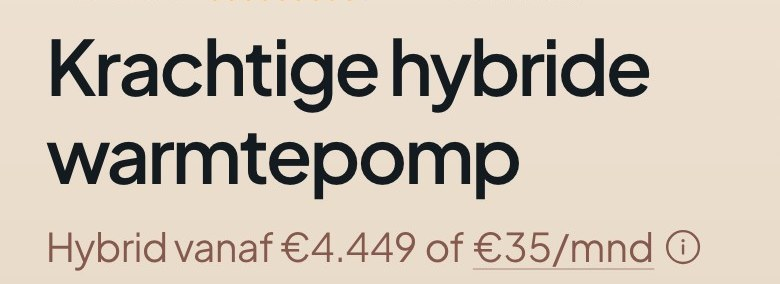
Quatt (NL)Nazwa i linia „Hybrid vanaf €4.449 of €35/mnd” z ikoną informacji.
Flairmax (DE)Pomarańczowy przycisk „In Raten za…” z logo easyCredit i link „Mehr Informationen”.
2Operator rat jeszcze nie wybrany; element ukryty do czasu umowy.
Zmiany
＋ NoweLinia „Rata od [X] zł / mies.” i link „Policz ratę”.
＋ NoweElement ukryty do czasu umowy z operatorem rat.
Znaczniki na projekcie
1PDP-03.1＋ NoweRata miesięczna i link do kalkulatora
2PDP-03.2＋ NoweWyświetla się dopiero po wyborze operatora
DlaczegoLinia z miesięczną ratą i linkiem do kalkulatora; ukryta do czasu umowy z operatorem.kliknij, aby rozwinąć
KupującyPrzy bilecie 22–31 tys.Czytaj więcejzł rata obniża próg decyzji; kupujący pompę ma budżet 30–70 tys. zł i pyta „czy się opłaca”, a rata pokazuje miesięczny koszt zamiast jednorazowego.
RynekRata na karcie: Quatt „€35/mnd” w linii z ceną, Flairmax przycisk easyCredit z kalkulatorem, Solvolte „Rata już od: 283,82 zł”, Sofar kalkulator rat; w PL 2 z 8 sklepów (Bridom, Solvolte), więc to nie higiena, tylko wzorzec z UE.
UXPozycja zależy od operatora płatności (otwarta decyzja), a PL jest tu słaby wzorcem; dlatego oznaczona jako opcjonalna.
Testy A/B — 5 propozycji · 1 z grafiką kliknij, aby rozwinąćTest 1 · A/BRata w linii kontra osobny przyciskz grafiką
Hipoteza: Jeśli rata będzie osobnym przyciskiem „Kup na raty”, to więcej osób zamówi na raty, bo widzi osobną ścieżkę.
Wariant ALinia „Rata od [X] zł” z linkiem.
Wariant BPrzycisk „Kup na raty od [X] zł / mies.”.
Dowód: Flairmax: przycisk easyCredit.
Metryka główna: Zamówienie z ratą
Pomocnicze:
Dodanie do koszyka
Warunek: Po umowie z operatorem rat.
Próba: min. 200 sesji na wariant
Zastępczo: przed/po 14 dni + 20 nagrań sesji z elementem w widoku
Test 2 · A/BRata przy cenie kontra tylko na ostatnim kroku
Hipoteza: Jeśli rata będzie dopiero w koszyku, to karta będzie prostsza, a konwersja się zmieni.
Wariant ARata na karcie.
Wariant BRata w koszyku.
Metryka główna: Dodanie do koszyka
Warunek: Po starcie sprzedaży, min. 200 sesji na wariant; do tego czasu przegląd nagrań sesji (Clarity) i porównanie przed/po.
Próba: min. 200 sesji na wariant
Zastępczo: przed/po 14 dni + 20 nagrań sesji z elementem w widoku
Odwracalny
Test 3 · A/BRata od 12 kontra 36 miesięcy
Hipoteza: Jeśli pokażemy ratę z dłuższego okresu, to więcej osób kliknie link, bo kwota jest niższa.
Wariant A12 miesięcy.
Wariant B36 miesięcy.
Metryka główna: Klik w „Policz ratę”
Warunek: Po starcie sprzedaży, min. 200 sesji na wariant; do tego czasu przegląd nagrań sesji (Clarity) i porównanie przed/po.
Próba: min. 200 sesji na wariant
Zastępczo: przed/po 14 dni + 20 nagrań sesji z elementem w widoku
Odwracalny
Test 4 · A/BEtykieta „Rata 0%” kontra „Rata od”
Hipoteza: Jeśli oferta będzie 0%, to więcej osób zamówi na raty.
Wariant A„Rata od [X] zł”.
Wariant B„Rata 0% od [X] zł”.
Dowód: Solvolte: „Rata 0% już od”.
Metryka główna: Zamówienie z ratą
Warunek: Po ustaleniu warunków z operatorem.
Próba: min. 200 sesji na wariant
Zastępczo: przed/po 14 dni + 20 nagrań sesji z elementem w widoku
Odwracalny
Test 5 · A/BRata dla ceny po dotacji kontra dla sprzętu
Hipoteza: Jeśli rata będzie liczona od ceny po dotacji, to więcej osób zaufa, bo suma jest realna.
Wariant ARata od całości (po dotacji).
Wariant BRata od ceny sprzętu.
Metryka główna: Zamówienie z ratą
Warunek: Po starcie sprzedaży, min. 200 sesji na wariant; do tego czasu przegląd nagrań sesji (Clarity) i porównanie przed/po.
Próba: min. 200 sesji na wariant
Zastępczo: przed/po 14 dni + 20 nagrań sesji z elementem w widoku
Odwracalny
Decyzja Wybór operatora płatności ratalnych.
PDP-04
Kluczowe cechy w punktach
DODAJEMYCZEKA NA DANE
Cztery punkty pod ceną: pojemność nominalna i użyteczna, podłączenie DC do falownika hybrydowego, sterownik EMS w komplecie (warunek dotacji), ogniwa LiFePO4 i liczba cykli. Pasek pojemności zostaje 1:1; punkty nie powtarzają całej tabeli parametrów.
Najlepsze na rynku
GeoPower: blok „Kluczowe cechy pompy ciepła GeoPower” z czterema punktami (wysoka wydajność, technologia 3-fazowa, wersja monoblok, energia ziemi).
KupPanPompe: lista cech pod ceną: czynnik R32, sterownik dotykowy, COP, klasa energetyczna, zakres pracy do −20°C.
Quatt: trzy punkty z ptaszkiem pod ceną („Bespaar tot €2.000 per jaar”, „Minder afhankelijk van de stijgende gasprijs”, „Ook voor huizen met beperkte isolatie”).
GeoPowerCzarny blok „Kluczowe cechy pompy ciepła GeoPower”: cztery punkty (wysoka wydajność, technologia 3-fazowa, wersja monoblok, energia ziemi) z opisami.
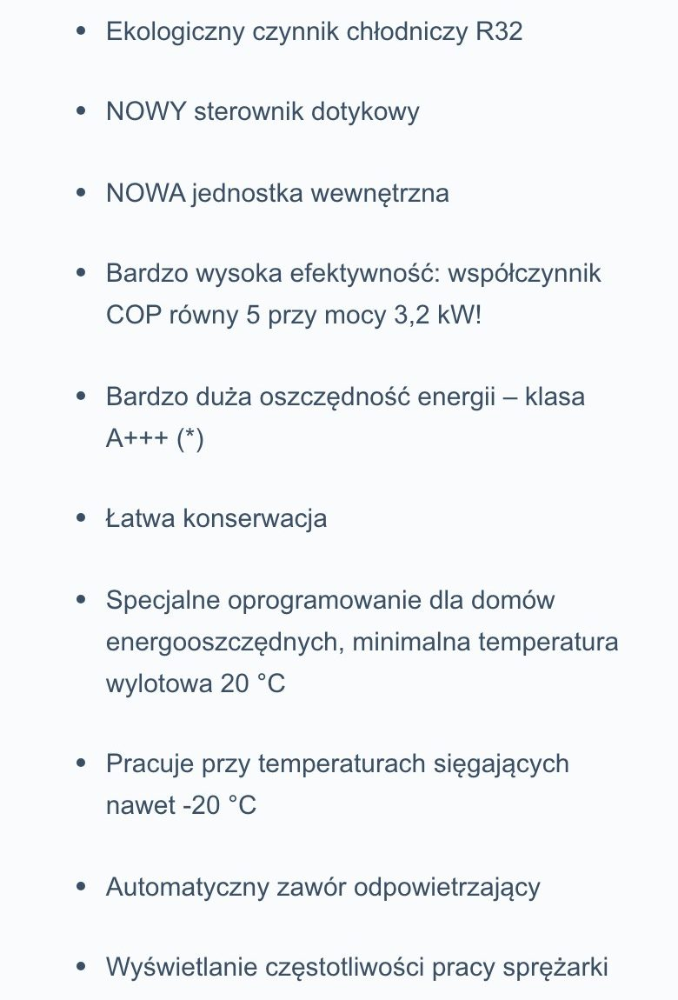
KupPanPompeLista cech: ekologiczny czynnik R32, sterownik dotykowy, jednostka wewnętrzna, COP, klasa energetyczna A+++, zakres pracy do −20°C.
Quatt (NL)Trzy punkty z ptaszkiem pod ceną: oszczędność roczna, niezależność od ceny gazu, domy z ograniczoną izolacją.
Dziś
Dziś tego nie ma
Element nowy — nie istnieje na obecnej stronie
Projekt
Magazyn energii 10 kWh LiFePO4
10 z 20 kWh05101520
22 900 złpo dotacji, z montażem
110 kWh pojemności nominalnej, ok. 9 kWh użytecznej
2Podłączenie DC: do falownika hybrydowego z listy zgodności
3Sterownik EMS w komplecie: warunek dotacji
4Ogniwa LiFePO4, ponad 6 000 cykli
Zmiany
＋ NowePunkt: pojemność nominalna 10 kWh i użyteczna ok. 9 kWh.
＋ NowePunkt: podłączenie DC do falownika hybrydowego z listy zgodności.
＋ NowePunkt: sterownik EMS w komplecie, warunek dotacji.
＋ NowePunkt: ogniwa LiFePO4, ponad 6 000 cykli.
Znaczniki na projekcie
1PDP-04.1＋ NowePojemność użyteczna
2PDP-04.2＋ NowePodłączenie DC
3PDP-04.3＋ NoweEMS w komplecie
4PDP-04.4＋ NoweChemia i cykle
DlaczegoCztery punkty z ikonami przy cenie; tabela parametrów zostaje niżej.kliknij, aby rozwinąć
KupującyCechy w kolejności rozstrzygania kupującego: pojemność (95,9%), zgodność z falownikiem (ograniczenie nr 1), EMS (bez niego nie ma dotacji), chemia i cykle.Czytaj więcejPozostałe parametry zostają w tabeli.
RynekKluczowe cechy w punktach ma 5 z 8 sklepów PL (norma) i 6 z 10 razem: KupPanPompe i GeoPower podają pięć do sześciu punktów (wydajność, technologia, wersja), Sofar parametry w liście, Solvolte listę zalet.
UXDziś cechy są rozproszone: pasek pojemności przy tytule, a reszta w tabeli 3 700 px niżej; cztery punkty przy cenie skracają drogę od ceny do parametrów.
Testy A/B — 5 propozycji · 1 z grafiką kliknij, aby rozwinąćTest 1 · A/BCztery punkty kontra kafle z wartościamiz grafiką
Hipoteza: Jeśli cechy będą kafelkami (nazwa i wartość), to więcej osób je przeczyta, bo są skanowalne.
Wariant ACztery punkty z ikonami.
Wariant BCztery kafle z wartością.
Dowód: Sofar i Solvolte używają list; kafle to nasz pomysł.
Metryka główna: Dodanie do koszyka
Pomocnicze:
Przewinięcie do parametrów
Warunek: Po starcie sprzedaży, min. 200 sesji na wariant; do tego czasu przegląd nagrań sesji (Clarity) i porównanie przed/po.
Próba: min. 200 sesji na wariant
Zastępczo: przed/po 14 dni + 20 nagrań sesji z elementem w widoku
Odwracalny
Wariant B — jak wygląda
Magazyn energii 10 kWh LiFePO4
pojemność10 kWh
podłączenieDC
EMSw komplecie
cykle6 000+
10 z 20 kWh05101520
22 900 złpo dotacji, z montażem
Test 2 · A/BCechy nad ceną kontra pod
Hipoteza: Jeśli cechy będą nad ceną, to więcej osób zrozumie produkt, zanim zobaczy cenę.
Wariant APod ceną.
Wariant BNad ceną.
Metryka główna: Dodanie do koszyka
Warunek: Po starcie sprzedaży, min. 200 sesji na wariant; do tego czasu przegląd nagrań sesji (Clarity) i porównanie przed/po.
Próba: min. 200 sesji na wariant
Zastępczo: przed/po 14 dni + 20 nagrań sesji z elementem w widoku
Odwracalny
Test 3 · A/BPięć punktów kontra cztery
Hipoteza: Jeśli dodamy piąty punkt „backup z falownikiem wyspowym”, to mniej osób się rozczaruje, bo backup jest najczęstszym rozczarowaniem.
Wariant ACztery punkty.
Wariant BPięć punktów z backupem.
Dowód: Opracowanie kategorii: backup to najczęstsze rozczarowanie.
Metryka główna: Zwroty z koszyka
Warunek: Po starcie sprzedaży, min. 200 sesji na wariant; do tego czasu przegląd nagrań sesji (Clarity) i porównanie przed/po.
Próba: min. 200 sesji na wariant
Zastępczo: przed/po 14 dni + 20 nagrań sesji z elementem w widoku
Odwracalny
Test 4 · A/BPojemność użyteczna jako pierwsza
Hipoteza: Jeśli pierwszym punktem będzie „9 kWh użytecznej”, to mniej osób pomyli nominalną z użyteczną.
Wariant ANominalna pierwsza.
Wariant BUżyteczna pierwsza.
Metryka główna: Zwroty z koszyka
Warunek: Po starcie sprzedaży, min. 200 sesji na wariant; do tego czasu przegląd nagrań sesji (Clarity) i porównanie przed/po.
Próba: min. 200 sesji na wariant
Zastępczo: przed/po 14 dni + 20 nagrań sesji z elementem w widoku
Odwracalny
Test 5 · A/BPunkty z linkiem do źródła
Hipoteza: Jeśli przy cykli i gwarancji będzie odnośnik [n], to więcej osób zaufa liczbie.
Wariant ABez odnośnika.
Wariant BZ odnośnikiem do źródła.
Dowód: Sklep wszędzie podaje źródła liczb rynkowych.
Metryka główna: Dodanie do koszyka
Warunek: Po starcie sprzedaży, min. 200 sesji na wariant; do tego czasu przegląd nagrań sesji (Clarity) i porównanie przed/po.
Próba: min. 200 sesji na wariant
Zastępczo: przed/po 14 dni + 20 nagrań sesji z elementem w widoku
Odwracalny
Decyzja Wartości (użyteczna pojemność, cykle, gwarancja) wynikają z karty dostawcy; do tego czasu z szablonu.
PDP-05
Opis produktu
DODAJEMYCZEKA NA DANE
Akapit opisu nad zakładkami, w trzech zdaniach: dla kogo jest ten bank i jaki problem rozwiązuje (pierwsze zdanie: pojemność i falownik). Pole „opis dostawcy” do uzupełnienia po wyborze dostawcy; zakładki zostają 1:1.
Najlepsze na rynku
KupPanPompe: akapit „Opis” na białym tle z zastosowaniami serii i wskazówką o montażu.
Sofar sklep: opis z danymi technicznymi i listą zestawu pod ceną.
Flairmax: opis ze śródtytułami: „Größte Leistung auf kleinstem Raum”, „Hocheffizient und komfortabel”, „Unerhört leise”.
KupPanPompeAkapit „Opis”: dwa akapity o zastosowaniu pompy w instalacjach z kotłem, panelami i niskotemperaturowymi grzejnikami.
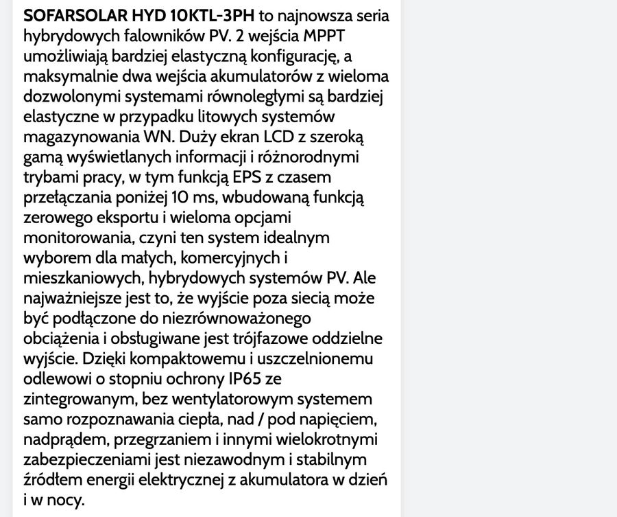
Sofar sklepOpis produktu z danymi technicznymi zestawu i listą parametrów drobnym drukiem.
Dziś
Dziś tego nie ma
Element nowy — nie istnieje na obecnej stronie
Projekt
1Opis
2Bank energii 10 kWh do fotowoltaiki z falownikiem hybrydowym: zmieści wieczorne zużycie typowego domu i nadwyżkę z paneli, którą dziś oddajesz do sieci. [opis dostawcy: 2–3 zdania]
Zmiany
＋ NoweNagłówek „Opis” nad zakładkami.
＋ NoweAkapit: dla kogo, jaki problem; pola do uzupełnienia z opisu dostawcy.
Aa TekstAkapit zajmuje miejsce dzisiejszego tekstu zastępczego „Przykładowa karta: ceny rynkowe tej klasy…”; ten komunikat zostaje w panelu zakupu.
Znaczniki na projekcie
1PDP-05.1＋ NoweNagłówek opisu
2PDP-05.2＋ NoweAkapit opisu
3PDP-05.3Aa TekstTekst zastępczy przeniesiony do panelu
DlaczegoTrzy zdania opisu nad zakładkami; zakładki bez zmian.kliknij, aby rozwinąć
KupującyPierwsze zdanie opisu odpowiada na „czy to dla mnie” (pojemność i falownik), a drugie na „co dostaję” (dotacja, EMS).Czytaj więcejDziś kupujący musi czytać zakładkę „Dla kogo”, żeby zrozumieć produkt.
RynekOpis produktu ma 6 z 8 sklepów PL (norma) i 6 z 10 razem; KupPanPompe dodaje akapit „Opis” z listą zastosowań, Sofar opis z danymi technicznymi, Flairmax rozbudowany opis ze śródtytułami (moc, sprawność, hałas, sterowanie, czynnik R290).
UXKarta ma dziś zakładki i tabelę, ale nie ma jednego akapitu opisu; akapit jest krótki i nie dubluje zakładek.Czytaj więcejTreść opisu pochodzi od dostawcy (pole do uzupełnienia), więc projekt nie wymyśla opisu.
Testy A/B — 5 propozycji · 1 z grafiką kliknij, aby rozwinąćTest 1 · A/BOpis w zakładce kontra nad zakładkamiz grafiką
Hipoteza: Jeśli opis będzie w zwijanej zakładce, to strona będzie krótsza, a mniej osób go przeczyta.
Wariant AAkapit nad zakładkami.
Wariant BZwijany „Opis”.
Dowód: Wzorce PL mają opis nad zakładkami lub w zakładce.
Metryka główna: Przewinięcie do parametrów
Pomocnicze:
Dodanie do koszyka
Warunek: Po starcie sprzedaży, min. 200 sesji na wariant; do tego czasu przegląd nagrań sesji (Clarity) i porównanie przed/po.
Próba: min. 200 sesji na wariant
Zastępczo: przed/po 14 dni + 20 nagrań sesji z elementem w widoku
Odwracalny
Wariant B — jak wygląda
Opis
Bank energii 10 kWh do fotowoltaiki z falownikiem hybrydowym. [opis dostawcy]
Test 2 · A/BDwa zdania kontra pięć
Hipoteza: Jeśli opis będzie miał pięć zdań, to więcej osób zrozumie produkt.
Wariant ATrzy zdania.
Wariant BPięć zdań ze śródtytułami.
Metryka główna: Czas na karcie
Warunek: Po starcie sprzedaży, min. 200 sesji na wariant; do tego czasu przegląd nagrań sesji (Clarity) i porównanie przed/po.
Próba: min. 200 sesji na wariant
Zastępczo: przed/po 14 dni + 20 nagrań sesji z elementem w widoku
Odwracalny
Test 3 · A/BPierwsze zdanie: dla kogo kontra co to jest
Hipoteza: Jeśli pierwsze zdanie będzie „dla kogo” (nie „co to jest”), to więcej osób zostanie, bo odpowiada na pytanie „czy to dla mnie”.
Wariant ADla kogo.
Wariant BCo to jest.
Metryka główna: Dodanie do koszyka
Warunek: Po starcie sprzedaży, min. 200 sesji na wariant; do tego czasu przegląd nagrań sesji (Clarity) i porównanie przed/po.
Próba: min. 200 sesji na wariant
Zastępczo: przed/po 14 dni + 20 nagrań sesji z elementem w widoku
Odwracalny
Test 4 · A/BOpis ze zdjęciem montażu
Hipoteza: Jeśli opis dostanie zdjęcie montażu, to więcej osób zaufa, bo widzi człowieka.
Wariant ASam tekst.
Wariant BTekst i zdjęcie.
Metryka główna: Czas na karcie
Warunek: Po starcie sprzedaży, min. 200 sesji na wariant; do tego czasu przegląd nagrań sesji (Clarity) i porównanie przed/po.
Próba: min. 200 sesji na wariant
Zastępczo: przed/po 14 dni + 20 nagrań sesji z elementem w widoku
Odwracalny
Test 5 · A/BOpis po angielsku producenta kontra nasz
Hipoteza: Jeśli opis będzie przepisany od producenta, to wynik będzie podobny, ale wyszukiwalność gorsza (duplikat).
Wariant ANasz opis.
Wariant BOpis producenta.
Dowód: Unikalność opisu wpływa na wyszukiwalność.
Metryka główna: Dodanie do koszyka
Warunek: Po starcie sprzedaży, min. 200 sesji na wariant; do tego czasu przegląd nagrań sesji (Clarity) i porównanie przed/po.
Próba: min. 200 sesji na wariant
Zastępczo: przed/po 14 dni + 20 nagrań sesji z elementem w widoku
Odwracalny
Decyzja Opis pochodzi od dostawcy (po jego wyborze); do tego czasu pole do uzupełnienia.
PDP-06
Pliki i wideo przy zakładkach
ZAMIANACZEKA NA DANE
Do zakładek „Ile to kosztuje · Dla kogo · Parametry · Pytania · Źródła” dochodzą „Pliki” (karta katalogowa, instrukcja montażu, warunki gwarancji) i „Wideo” (skrót do nagrania montażu — ten sam element co na stronie głównej). Pliki i nagrania pochodzą od dostawcy i z nagrań; do tego czasu pola puste.
Najlepsze na rynku
Flairmax: lista pasków „Beschreibung · Katalog · Datenblatt · Systemgarantie · Video — Logatherm WLW176 · Video — Test in der Kältekammer · Video — Test im Schallmessraum”.
Bridom: lista „Do pobrania” z pozycjami: karta katalogowa, instrukcje, etykieta energetyczna, deklaracja zgodności CE.
Quatt: szary pas „Download de brochure” z jednym przyciskiem.
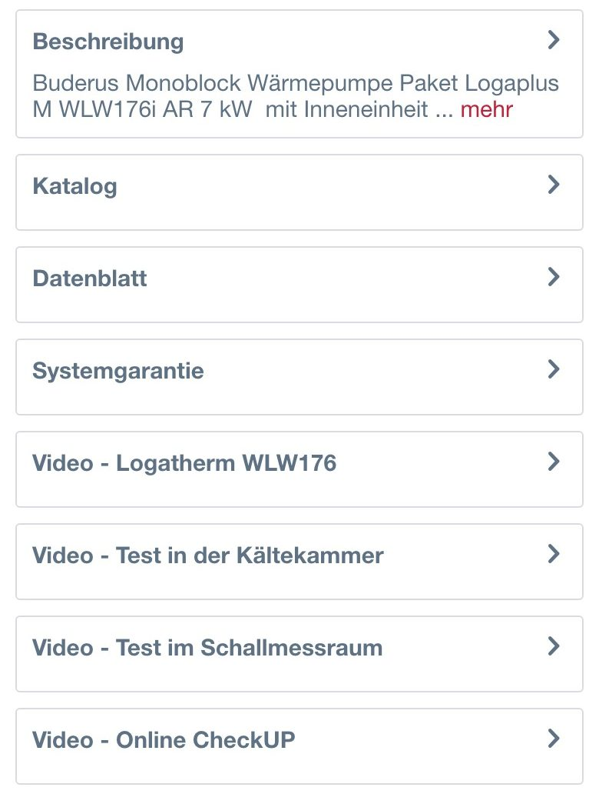
Flairmax (DE)Lista pasków: opis, katalog, karta danych, gwarancja systemowa i cztery wideo (nazwy opisują treść nagrania).
BridomLista „Do pobrania”: karta katalogowa, karta produktu, instrukcje obsługi, etykieta energetyczna, deklaracja zgodności CE, atest higieniczny.
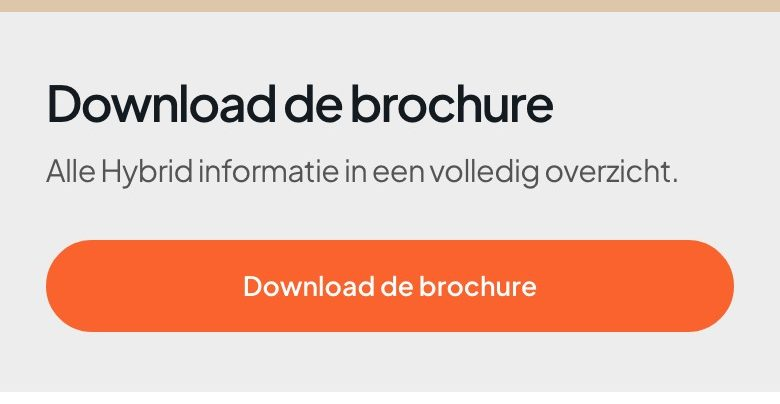
Quatt (NL)Pas „Download de brochure” z jednym zdaniem i pomarańczowym przyciskiem pobrania.
Dziś
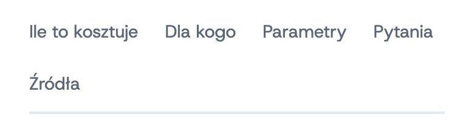
Dziś: pięć zakładek tekstowych („Ile to kosztuje”, „Dla kogo”, „Parametry”, „Pytania”, „Źródła”).
＋ NoweZakładka „Pliki”: karta katalogowa, instrukcja, gwarancja (PDF).
＋ NoweZakładka „Wideo”: skrót do nagrania montażu (jak na stronie głównej).
Znaczniki na projekcie
1PDP-06.1＋ NowePliki do pobrania
2PDP-06.2＋ NoweWideo
DlaczegoDwie nowe zakładki: pliki do pobrania i wideo.kliknij, aby rozwinąć
KupującyKupujący bank sprawdza kartę katalogową przed zakupem („czy gwarancja bez progu pojemności”, „pojemność użyteczna”), a kupujący pompę chce zobaczyć montaż.Czytaj więcejPliki są dowodem, że dane nie pochodzą od sprzedawcy.
RynekPliki do pobrania: 3 z 8 sklepów PL (Bridom, Sofar, Solvolte), 5 z 10 razem; Flairmax ma na karcie trzy pliki (katalog, karta danych, gwarancja systemowa) i cztery wideo (test w komorze zimna, test w komorze dźwiękowej); Quatt przycisk „Download de brochure”; Sofar i Flairmax wideo produktowe.
UXDziś zakładek jest pięć i żadna nie zawiera plików ani wideo.Czytaj więcejZ F2 bierzemy skrót do wideo z czasem; wideo jest opcjonalne i zależne od nagrań.
Testy A/B — 5 propozycji · 1 z grafiką kliknij, aby rozwinąćTest 1 · A/BZakładki „Pliki” i „Wideo” kontra jedna „Materiały”z grafiką
Hipoteza: Jeśli pliki i wideo będą w jednej zakładce „Materiały”, to więcej osób wejdzie, bo pasek zakładek będzie krótszy.
Wariant ADwie zakładki.
Wariant BJedna „Materiały (3 pliki, 1 wideo)”.
Dowód: Flairmax: pliki i wideo jako osobne paski.
Metryka główna: Klik w zakładkę
Pomocnicze:
Pobranie pliku
Odtworzenie wideo
Warunek: Po starcie sprzedaży, min. 200 sesji na wariant; do tego czasu przegląd nagrań sesji (Clarity) i porównanie przed/po.
Próba: min. 200 sesji na wariant
Zastępczo: przed/po 14 dni + 20 nagrań sesji z elementem w widoku
Odwracalny
Wariant B — jak wygląda
Test 2 · A/BKarta katalogowa jako przycisk przy cenie
Hipoteza: Jeśli „Karta katalogowa” będzie linkiem pod ceną, to więcej osób ją pobierze.
Wariant AZakładka „Pliki”.
Wariant BLink „Karta katalogowa (PDF)” pod ceną.
Metryka główna: Pobranie pliku
Warunek: Po starcie sprzedaży, min. 200 sesji na wariant; do tego czasu przegląd nagrań sesji (Clarity) i porównanie przed/po.
Próba: min. 200 sesji na wariant
Zastępczo: przed/po 14 dni + 20 nagrań sesji z elementem w widoku
Odwracalny
Test 3 · A/BWideo z opisem treści w nazwie
Hipoteza: Jeśli nazwa wideo opisze treść („Montaż 10 kWh krok po kroku”), to więcej osób je odtworzy, niż przy „Wideo 1”.
Wariant AOpis treści.
Wariant BNumer wideo.
Dowód: Flairmax nazywa nagrania według treści.
Metryka główna: Odtworzenie wideo
Warunek: Po nagraniu wideo.
Próba: min. 200 sesji na wariant
Zastępczo: przed/po 14 dni + 20 nagrań sesji z elementem w widoku
Odwracalny
Test 4 · A/BPliki: PDF kontra link zewnętrzny
Hipoteza: Jeśli pliki będą plikami PDF w sklepie, to więcej osób je pobierze, bo nie opuszczają strony.
Wariant APDF w sklepie.
Wariant BLink do strony producenta.
Metryka główna: Pobranie pliku
Warunek: Po starcie sprzedaży, min. 200 sesji na wariant; do tego czasu przegląd nagrań sesji (Clarity) i porównanie przed/po.
Próba: min. 200 sesji na wariant
Zastępczo: przed/po 14 dni + 20 nagrań sesji z elementem w widoku
Odwracalny
Test 5 · A/BSkrót „Wideo” na górze karty
Hipoteza: Jeśli wideo będzie dostępne przy zdjęciu produktu (miniatura w galerii), to więcej osób je odtworzy.
Wariant AZakładka „Wideo”.
Wariant BMiniatura w galerii.
Dowód: Quatt: wideo w tle hero.
Metryka główna: Odtworzenie wideo
Warunek: Po nagraniu wideo.
Próba: min. 200 sesji na wariant
Zastępczo: przed/po 14 dni + 20 nagrań sesji z elementem w widoku
Odwracalny
Decyzja Pliki i nagrania od dostawcy; do tego czasu zakładki ukryte.
PDP-07
Akcesoria przy zakupie
DODAJEMY
Pod ceną dwa pola wyboru: skrzynka zasilania awaryjnego (+ 2 200 zł, backup dla wybranych obwodów) i licznik energii (cena do uzupełnienia). Pole zaznaczone trafia do koszyka razem z bankiem i montażem; sterownik EMS jest już pozycją paragonu.
Najlepsze na rynku
Flairmax: ramka „Zubehör | Info zur Montage” z jednym akcesorium (cena 499,99 €) i polem wyboru w polu zakupu.
GeoPower: sekcja „Usługi oraz dodatki związane z produktem” — karuzela z kaflem produktu, ikonami koszyka i porównania.
Soltech: ramka „Wniosek w programie Przydomowy Magazyn Energii (PME 2) 553,50 zł” z przyciskiem „Dodaj”.
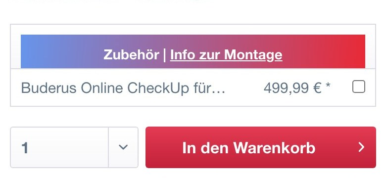
Flairmax (DE)Ramka „Zubehör | Info zur Montage” z akcesorium „Buderus Online CheckUp” 499,99 € i polem wyboru; pod nią ilość i czerwony przycisk koszyka.
GeoPowerSekcja „Usługi oraz dodatki związane z produktem”: karuzela z kaflem zbiornika CWU 250 l, ceną 12 130,00 zł i ikonami koszyka.
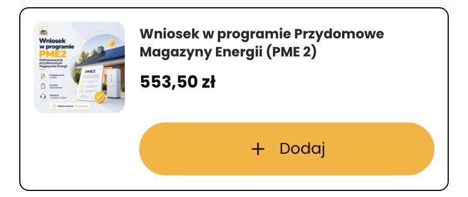
SoltechRamka „Wniosek w programie Przydomowy Magazyn Energii (PME 2)” z ceną 553,50 zł i przyciskiem „Dodaj”.
＋ NowePole wyboru: skrzynka zasilania awaryjnego + 2 200 zł.
＋ NowePole wyboru: licznik energii / czujnik (cena po dostawcy).
Znaczniki na projekcie
1PDP-07.1＋ NoweBackup jako akcesorium
2PDP-07.2＋ NoweLicznik energii
DlaczegoDwa pola wyboru z ceną przy przycisku zakupu; EMS już na paragonie.kliknij, aby rozwinąć
KupującyBackup jest najczęstszym rozczarowaniem: kupujący zakłada, że bank da prąd w czasie awarii, a wymaga to falownika wyspowego i skrzynki.Czytaj więcejWybór akcesorium przy zakupie rozstrzyga to na karcie, a nie po zamówieniu.
RynekAkcesoria przy produkcie ma 3 z 8 sklepów PL (GeoPower, Soltech, Sofar) i 4 z 10 razem; Flairmax umieszcza „Zubehör” jako pole wyboru z ceną w samym polu zakupu; GeoPower osobną sekcję „Usługi oraz dodatki związane z produktem”; Soltech dodaje wniosek dotacyjny jako płatną pozycję za 553,50 zł.
UXDziś skrzynka awaryjna jest tylko pozycją w tabeli „Ile to kosztuje” (+ 2 200 zł) i w zakładce „Dla kogo”; pole wyboru przy przycisku robi z niej decyzję zakupową.Czytaj więcejWniosek o dotację jest u nas w cenie montażu, więc nie jest płatną pozycją (inaczej niż u Soltech).
Testy A/B — 5 propozycji · 1 z grafiką kliknij, aby rozwinąćTest 1 · A/BPola wyboru kontra karuzela akcesoriów pod przyciskiemz grafiką
Hipoteza: Jeśli akcesoria będą karuzelą pod przyciskiem (jak GeoPower), to więcej osób je dołoży, bo widzi zdjęcia.
Wariant ADwa pola wyboru przy przycisku.
Wariant BSekcja „Do kompletu” pod przyciskiem.
Dowód: GeoPower: sekcja z kaflami dodatków.
Metryka główna: Dodanie akcesorium
Pomocnicze:
Wartość koszyka
Warunek: Po starcie sprzedaży, min. 200 sesji na wariant; do tego czasu przegląd nagrań sesji (Clarity) i porównanie przed/po.
Próba: min. 200 sesji na wariant
Zastępczo: przed/po 14 dni + 20 nagrań sesji z elementem w widoku
Test 2 · A/BSkrzynka awaryjna domyślnie zaznaczona
Hipoteza: Jeśli skrzynka będzie domyślnie zaznaczona dla klientów z falownikiem wyspowym, to więcej osób dostanie backup, a zwroty spadną.
Wariant ANiezaznaczona.
Wariant BZaznaczona (jeśli falownik wyspowy).
Dowód: Opracowanie kategorii: backup to najczęstsze rozczarowanie.
Metryka główna: Wartość koszyka
Pomocnicze:
Zwroty z koszyka
Warunek: Po wprowadzeniu wyboru falownika.
Próba: min. 200 sesji na wariant
Zastępczo: przed/po 14 dni + 20 nagrań sesji z elementem w widoku
Odwracalny
Test 3 · A/BCena akcesorium w polu kontra po zaznaczeniu
Hipoteza: Jeśli cena akcesorium będzie widoczna dopiero po zaznaczeniu, to więcej osób je zaznaczy, a zaufanie do ceny spadnie.
Wariant ACena widoczna.
Wariant BCena po zaznaczeniu.
Metryka główna: Dodanie akcesorium
Warunek: Po starcie sprzedaży, min. 200 sesji na wariant; do tego czasu przegląd nagrań sesji (Clarity) i porównanie przed/po.
Próba: min. 200 sesji na wariant
Zastępczo: przed/po 14 dni + 20 nagrań sesji z elementem w widoku
Odwracalny
Test 4 · A/BAkcesoria pod paragonem kontra pod przyciskiem
Hipoteza: Jeśli akcesoria będą pod paragonem, to mniej osób je zauważy, a przycisk będzie wyżej.
Wariant APod przyciskiem.
Wariant BPod paragonem.
Metryka główna: Dodanie akcesorium
Warunek: Po starcie sprzedaży, min. 200 sesji na wariant; do tego czasu przegląd nagrań sesji (Clarity) i porównanie przed/po.
Próba: min. 200 sesji na wariant
Zastępczo: przed/po 14 dni + 20 nagrań sesji z elementem w widoku
Odwracalny
Test 5 · A/BOpis akcesorium: z korzyścią kontra z nazwą
Hipoteza: Jeśli opis będzie korzyścią („prąd w czasie awarii”), to więcej osób zaznaczy skrzynkę.
Wariant ANazwa i krótki opis.
Wariant BKorzyść w jednym zdaniu.
Metryka główna: Dodanie akcesorium
Warunek: Po starcie sprzedaży, min. 200 sesji na wariant; do tego czasu przegląd nagrań sesji (Clarity) i porównanie przed/po.
Próba: min. 200 sesji na wariant
Zastępczo: przed/po 14 dni + 20 nagrań sesji z elementem w widoku
Odwracalny
Decyzja Cena skrzynki awaryjnej i licznika zależy od dostawcy; wniosek o dotację zostaje w cenie montażu.
PDP-08
Narzędzia przy produkcie: falownik, oszczędność, dotacja
DODAJEMYCZEKA NA DANE
Trzy wejścia pod panelem zakupu: „Sprawdź swój falownik” (lista marek z wynikiem „pasuje, podłączenie DC”), „Policz oszczędność” i „Policz dotację” (oba „wkrótce”). Zgodność z falownikiem jest największą obawą, więc to narzędzie ma miejsce na karcie, nie w osobnym konfiguratorze.
Najlepsze na rynku
Boxt: konfigurator wprost na karcie — „Are you a homeowner or a landlord?” z dwoma przyciskami wyboru.
Columbus: formularz „Umów się na konsultację” z wyborem produktu i polami kontaktowymi.
Quatt: przycisk „Bereken mijn besparing” pod formularzem adresu.
Boxt (UK)Karta konfiguratora „Are you a homeowner or a landlord?” z dwoma przyciskami wyboru.
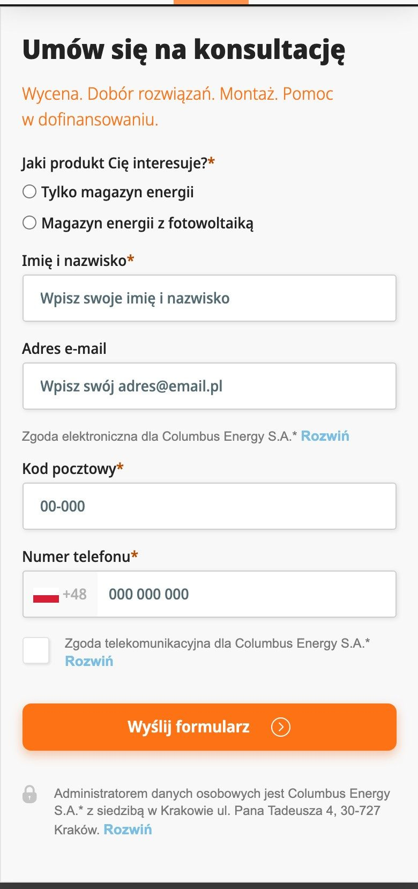
Columbus EnergyFormularz „Umów się na konsultację”: wybór produktu, imię, e-mail, kod pocztowy, telefon, przycisk „Wyślij formularz”.
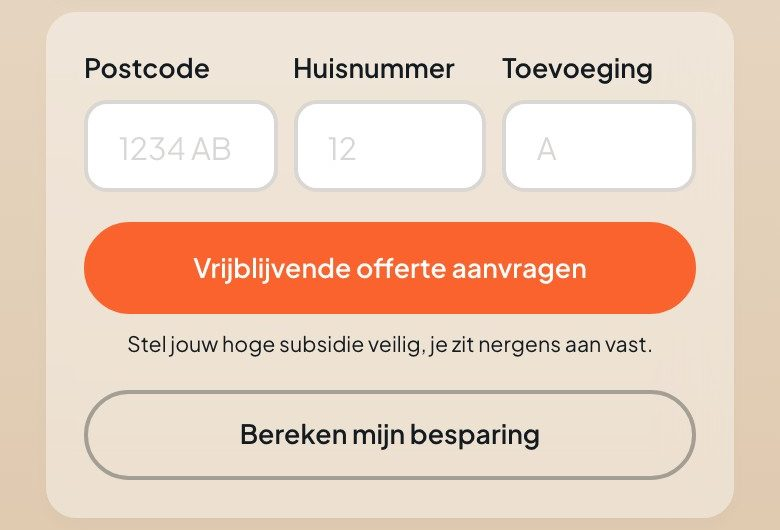
Quatt (NL)Pola kod pocztowy, numer domu, dodatek; pomarańczowy przycisk „Vrijblijvende offerte aanvragen” i przycisk z obrysem „Bereken mijn besparing”.
Dziś
Dziś tego nie ma
Element nowy — nie istnieje na obecnej stronie
Projekt
Zanim dodasz do koszyka
1Sprawdź swój falownik
Wybierz markę z tabliczki falownika.
HuaweiSofarGoodWeFronius + BYDDeyeGrowatt
Huawei SUN2000-L1: pasuje, podłączenie DC. [lista zgodności od dostawcy]
＋ NoweMały kreator „Sprawdź swój falownik”: wybór marki, wynik z podłączeniem (lista zgodności od dostawcy).
＋ Nowe„Policz oszczędność”: link do narzędzia (status „wkrótce”).
＋ Nowe„Policz dotację”: link do narzędzia (status „wkrótce”).
Znaczniki na projekcie
1PDP-08.1＋ NoweSprawdzenie falownika na karcie
2PDP-08.2＋ NoweNarzędzie oszczędności
3PDP-08.3＋ NoweNarzędzie dotacji
DlaczegoKreator falownika, oszczędność i dotacja pod panelem zakupu.kliknij, aby rozwinąć
KupującyZgodność z falownikiem jest ograniczeniem nr 1 (bank AC kontra DC); drugie i trzecie pytanie to oszczędność przy net-billingu (4 480 fraz) i dotacja (9 320).Czytaj więcejKupujący chce odpowiedzi na karcie, zanim doda do koszyka.
RynekKonfigurator na karcie ma 2 z 8 sklepów PL (Boxt: „Are you a homeowner or a landlord?”, Columbus: kalkulator oszczędności w ofercie); Quatt „Bereken mijn besparing” przy cenie; Hello Watt kalkulator dotacji i zwrotu w artykule; Columbus formularz „Umów się na konsultację” na karcie.
UXDziś zgodność jest opisana tekstem w sekcji „Pasuje do falownika” (lista marek jako chipy) niżej; kreator robi z tego wybór.Czytaj więcejZ F2 nie bierzemy nic, bo F2 nie projektowało karty.
Testy A/B — 5 propozycji · 1 z grafiką kliknij, aby rozwinąćTest 1 · A/BKreator falownika nad ceną kontra pod przyciskiemz grafiką
Hipoteza: Jeśli kreator będzie nad ceną, to więcej osób go użyje, bo to pierwsze pytanie.
Wariant APod panelem zakupu.
Wariant BW panelu zakupu jako przycisk „Czy pasuje do mojego falownika?”.
Dowód: Boxt: konfigurator zaczyna kartę.
Metryka główna: Użycie kreatora
Pomocnicze:
Dodanie do koszyka
Zwroty z koszyka
Warunek: Po starcie sprzedaży, min. 200 sesji na wariant; do tego czasu przegląd nagrań sesji (Clarity) i porównanie przed/po.
Próba: min. 200 sesji na wariant
Zastępczo: przed/po 14 dni + 20 nagrań sesji z elementem w widoku
Hipoteza: Jeśli wynik będzie miał dopisek „wymaga EMS i sterownika w cenie”, to więcej osób zaufa.
Wariant APasuje, podłączenie DC.
Wariant BPasuje, podłączenie DC, EMS w cenie.
Metryka główna: Dodanie do koszyka
Warunek: Po starcie sprzedaży, min. 200 sesji na wariant; do tego czasu przegląd nagrań sesji (Clarity) i porównanie przed/po.
Próba: min. 200 sesji na wariant
Zastępczo: przed/po 14 dni + 20 nagrań sesji z elementem w widoku
Odwracalny
Test 3 · A/BMarki jako chipy kontra lista rozwijana
Hipoteza: Jeśli marki będą na liście rozwijanej, to kreator będzie krótszy, a mniej osób go dotknie.
Wariant AChipy.
Wariant BLista rozwijana.
Metryka główna: Użycie kreatora
Warunek: Po starcie sprzedaży, min. 200 sesji na wariant; do tego czasu przegląd nagrań sesji (Clarity) i porównanie przed/po.
Próba: min. 200 sesji na wariant
Zastępczo: przed/po 14 dni + 20 nagrań sesji z elementem w widoku
Odwracalny
Test 4 · A/BDla falownika spoza listy: formularz zamiast wyniku
Hipoteza: Jeśli dla falownika spoza listy pojawi się „Zadzwoń do doradcy”, to więcej osób zostanie, bo nie dostaje komunikatu błędu.
Wariant AKomunikat „niezgodny”.
Wariant BPrzycisk „Zapytaj doradcę”.
Metryka główna: Kontakt z doradcą
Warunek: Po starcie sprzedaży, min. 200 sesji na wariant; do tego czasu przegląd nagrań sesji (Clarity) i porównanie przed/po.
Próba: min. 200 sesji na wariant
Zastępczo: przed/po 14 dni + 20 nagrań sesji z elementem w widoku
Odwracalny
Test 5 · A/BOszczędność jako pierwsze narzędzie
Hipoteza: Jeśli „Policz oszczędność” stanie pierwsze, to więcej osób zaufa liczbie, bo odpowiada na „czy się zwróci”.
Wariant AFalownik pierwszy.
Wariant BOszczędność pierwsza.
Metryka główna: Użycie narzędzia
Warunek: Po uruchomieniu narzędzia oszczędności.
Próba: min. 200 sesji na wariant
Zastępczo: przed/po 14 dni + 20 nagrań sesji z elementem w widoku
Odwracalny
Decyzja Lista zgodności falowników pochodzi od dostawcy (po jego wyborze); do tego czasu wynik z szablonu.
PDP-09
Powiązane poradniki przy produkcie
DODAJEMY
„Zanim kupisz ten bank”: dwa artykuły z ikoną typu i czasem czytania (jak zacząć, poradnik o wyborze) oraz zapowiedź, że w treści artykułu stoi kafel tego produktu. To odwrotny kierunek do strony głównej i listy: z produktu do treści, a z treści z powrotem do produktu.
Najlepsze na rynku
Bridom: karuzela „Podobne produkty” z kaflami (plakietka PROMOCJA, cena, gwiazdki).
Columbus: sekcja bloga na karcie produktu z kafelkami wpisów.
Quatt: sekcja „Zo werkt Quatt Hybrid” z rozwijanymi wyjaśnieniami: jak działa system.
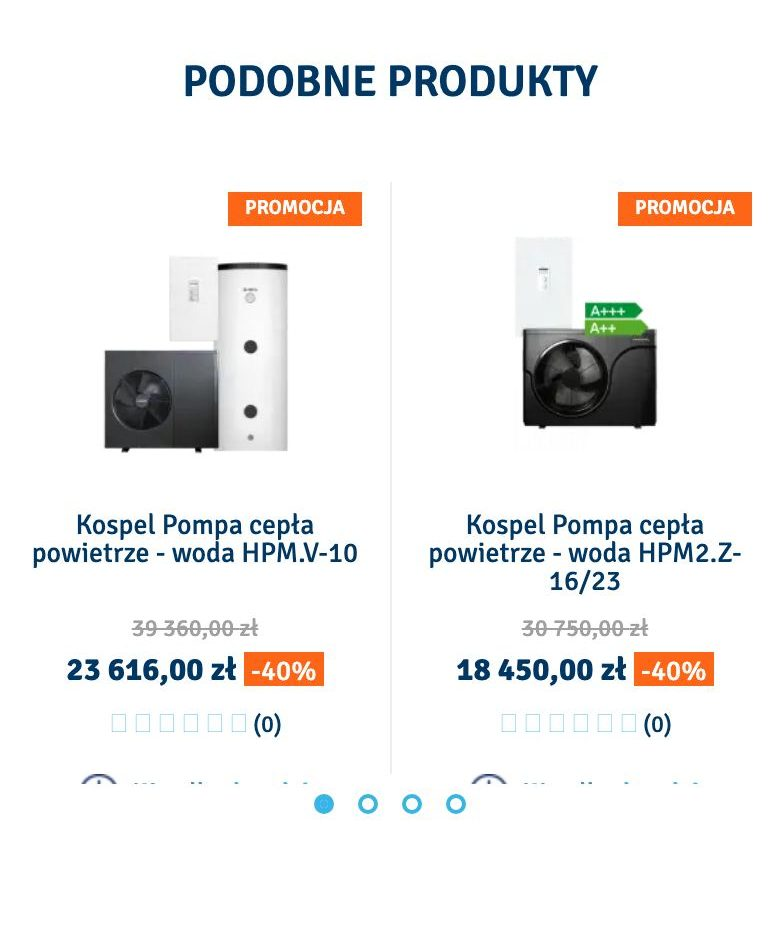
BridomNagłówek „Podobne produkty” i karuzela kafli z plakietką PROMOCJA, ceną, ceną przekreśloną i terminem.
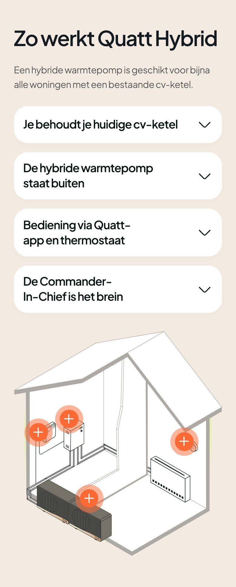
Quatt (NL)Sekcja „Zo werkt Quatt Hybrid”: akapit i pięć rozwijanych wierszy z wyjaśnieniami (jak działa system), z rysunkiem domu.
3Artykuły z rodziny „bank energii”; w treści artykułu stoi kafel tego produktu (droga z artykułu do produktu).
Zmiany
＋ NoweDwa artykuły z ikoną typu: „Jak zacząć kupowanie banku energii”, „Jak nie pomylić się przy wyborze magazynu energii”.
＋ NoweArtykuły powiązane z produktem; w treści artykułu stoi kafel produktu.
Znaczniki na projekcie
1PDP-09.1＋ NoweArtykuł „Jak zacząć”
2PDP-09.2＋ NoweArtykuł „Jak nie pomylić się przy wyborze”
3PDP-09.3＋ NoweOdesłanie z artykułu z powrotem do produktu
DlaczegoDwa artykuły z typem i czasem czytania; odesłanie z artykułu do kafla produktu.kliknij, aby rozwinąć
KupującyKupujący bank na karcie jest nadal w fazie nauki kategorii (pytania „jak działa”, „czym się różnią”).Czytaj więcejLink do poradnika zmniejsza ryzyko, że wyjdzie ze sklepu, żeby poszukać wiedzy; artykuł wraca do produktu przez kafel w treści.
RynekBridom: karuzela „Podobne produkty” i blok linków do wpisów pod listą; Boxt: karuzela kroków montażu; Quatt: sekcje „Zo werkt Quatt Hybrid” z rozwijanymi wyjaśnieniami i artykuły na stronie głównej; Columbus: sekcja bloga na karcie.Czytaj więcejPowiązane produkty ma 2 z 8 sklepów PL.
UXDziś karta nie odsyła do żadnego artykułu, choć istnieją szkice dla banku.Czytaj więcejWymaganie Tomka „podstrona treści z odwołaniem do produktów” działa w obie strony: z produktu do artykułu i z artykułu do kafla produktu.
Testy A/B — 5 propozycji · 1 z grafiką kliknij, aby rozwinąćTest 1 · A/BDwa artykuły kontra link w jednej liniiz grafiką
Hipoteza: Jeśli poradniki będą jedną linią „Przeczytaj: …”, to karta będzie krótsza, a klikalność spadnie.
Wariant ADwie karty artykułów.
Wariant BLinia z dwoma linkami.
Dowód: Bridom: blok linków.
Metryka główna: Klik w artykuł
Pomocnicze:
Powrót do karty z artykułu
Warunek: Po starcie sprzedaży, min. 200 sesji na wariant; do tego czasu przegląd nagrań sesji (Clarity) i porównanie przed/po.
Próba: min. 200 sesji na wariant
Zastępczo: przed/po 14 dni + 20 nagrań sesji z elementem w widoku
Test 2 · A/BArtykuł „Jak zacząć” pierwszy kontra poradnik
Hipoteza: Jeśli pierwszym artykułem będzie poradnik o wyborze, a nie „Jak zacząć”, to więcej osób kliknie, bo dotyczy decyzji.
Wariant AJak zacząć.
Wariant BPoradnik o wyborze.
Metryka główna: Klik w artykuł
Warunek: Po starcie sprzedaży, min. 200 sesji na wariant; do tego czasu przegląd nagrań sesji (Clarity) i porównanie przed/po.
Próba: min. 200 sesji na wariant
Zastępczo: przed/po 14 dni + 20 nagrań sesji z elementem w widoku
Odwracalny
Test 3 · A/BArtykuły pod opisem kontra nad opisem
Hipoteza: Jeśli artykuły będą nad opisem, to więcej osób je zobaczy.
Wariant APod opisem.
Wariant BNad opisem.
Metryka główna: Klik w artykuł
Warunek: Po starcie sprzedaży, min. 200 sesji na wariant; do tego czasu przegląd nagrań sesji (Clarity) i porównanie przed/po.
Próba: min. 200 sesji na wariant
Zastępczo: przed/po 14 dni + 20 nagrań sesji z elementem w widoku
Odwracalny
Test 4 · A/BKafel produktu w treści artykułu na górze kontra w połowie
Hipoteza: Jeśli kafel produktu w artykule stanie na górze, to więcej osób wróci do karty.
Wariant AW połowie artykułu.
Wariant BNa górze artykułu.
Dowód: Hello Watt wstawia karuzelę produktów nad artykułem.
Metryka główna: Powrót do karty
Warunek: Po starcie sprzedaży, min. 200 sesji na wariant; do tego czasu przegląd nagrań sesji (Clarity) i porównanie przed/po.
Próba: min. 200 sesji na wariant
Zastępczo: przed/po 14 dni + 20 nagrań sesji z elementem w widoku
Odwracalny
Test 5 · A/BOpis typu artykułu bez ikony
Hipoteza: Jeśli zostanie sam tytuł, to lista będzie krótsza, a klikalność się nie zmieni.
Wariant AZ ikoną i typem.
Wariant BSam tytuł.
Metryka główna: Klik w artykuł
Warunek: Po starcie sprzedaży, min. 200 sesji na wariant; do tego czasu przegląd nagrań sesji (Clarity) i porównanie przed/po.
Próba: min. 200 sesji na wariant
Zastępczo: przed/po 14 dni + 20 nagrań sesji z elementem w widoku
Odwracalny
PDP-10
Pasek zaufania wyżej
ZAMIANAOPCJONALNE
Trzy obietnice (montaż z firmy z uprawnieniami, źródła liczb z datą, 14 dni na zwrot sprzętu) z linii pod paragonem (1 851 px) przechodzą pod tytuł produktu. Treść bez zmian; tylko miejsce. Element opcjonalny: jeden wzorzec i brak wpływu na obawę.
Najlepsze na rynku
Flairmax: cztery wiersze z zielonymi ptaszkami pod tytułem: certyfikowani technicy i wsparcie, produkt na rynek niemiecki, 100% gwarancja producenta, montaż w całych Niemczech.
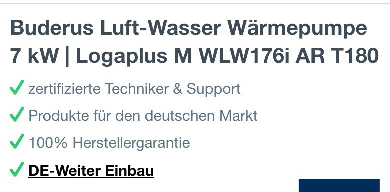
Flairmax (DE)Nagłówek „Buderus Luft-Wasser Wärmepumpe 7 kW | Logaplus M WLW176i AR T180” i cztery zielone ptaszki pod nim (techniczni, rynek, gwarancja, montaż).
Dziś
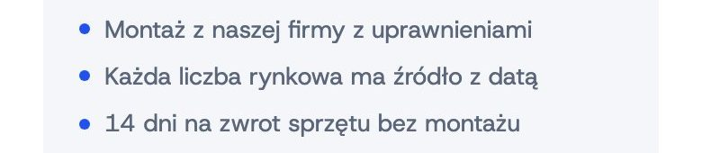
Dziś: trzy obietnice z niebieskimi kropkami pod paragonem, na 1 851 px.
⇄ PrzeniesienieTrzy obietnice zaufania pod tytułem produktu zamiast pod paragonem.
Znaczniki na projekcie
1PDP-10.1⇄ PrzeniesieniePasek zaufania pod tytułem
DlaczegoTe same trzy obietnice pod tytułem produktu.kliknij, aby rozwinąć
KupującyObietnice odpowiadają na obawę „kto mi to zamontuje i co z gwarancją”, więc powinny być widoczne przed zdecydowaniem; dziś trafiają na 1 851 px, po paragonie.
RynekFlairmax: cztery ptaszki zaufania (certyfikowani technicy, produkt na rynek niemiecki, gwarancja producenta, montaż w całych Niemczech) stoją między nazwą a zdjęciem.Czytaj więcejNa karcie produktu w PL pasek zaufania nie występuje (1 z 8).
UXDowód jest słaby: jeden wzorzec i brak liczb o skuteczności; przeniesienie nie zmienia treści, więc ryzyko jest małe.Czytaj więcejDlatego opcjonalne i do testu A/B.
Testy A/B — 5 propozycji · 1 z grafiką kliknij, aby rozwinąćTest 1 · A/BPasek pod tytułem kontra pod przyciskiemz grafiką
Hipoteza: Jeśli pasek będzie pod przyciskiem koszyka, to więcej osób doda do koszyka, bo obietnica jest przy decyzji.
Wariant APod tytułem.
Wariant BPod przyciskiem.
Dowód: Flairmax: pod tytułem; Sofar i Bridom: ikony płatności pod przyciskiem.
Metryka główna: Dodanie do koszyka
Pomocnicze:
Zwroty z koszyka
Warunek: Po starcie sprzedaży, min. 200 sesji na wariant; do tego czasu przegląd nagrań sesji (Clarity) i porównanie przed/po.
Próba: min. 200 sesji na wariant
Zastępczo: przed/po 14 dni + 20 nagrań sesji z elementem w widoku
Bank energii 10 kWh do fotowoltaiki z falownikiem hybrydowym: zmieści wieczorne zużycie typowego domu i nadwyżkę z paneli, którą dziś oddajesz do sieci. [opis dostawcy: 2–3 zdania]